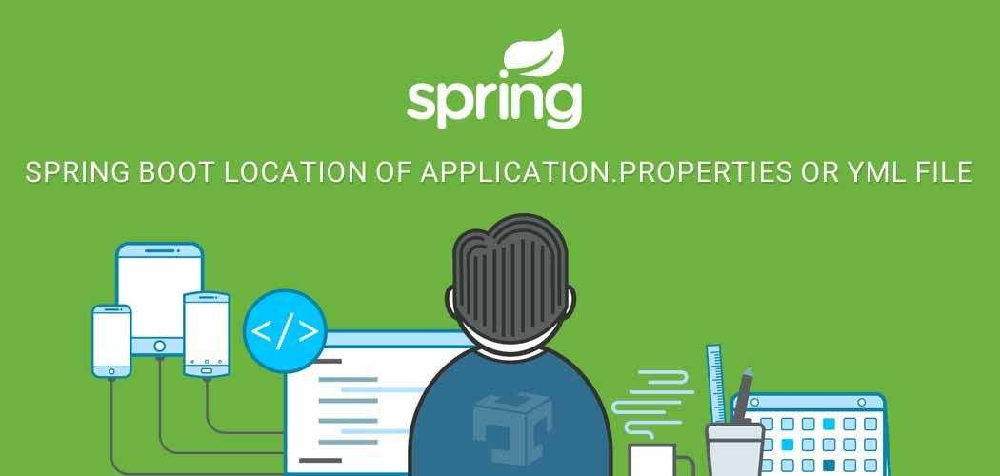

Plantillas Web Spring
SpringFramework (creado por Rod Johnson en 2004) es una herramienta que nace con la intención de simplificar y facilitar la construcción de aplicaciones JEE. El problema de rendimiento al utilizar los EJB en JEE hizo buscar una solución para mejorar y agilizar el desarrollo de aplicaciones Java. .

es el subproyecto de Spring Framework que se centra en proporcionar la infraestructura para la creación y ejecución de aplicaciones web ricas. El proyecto intenta resolver los 3 problemas principales a los que los desarrolladores de aplicaciones web se enfrentan: ¿Cómo expresar normas de navegación de la página? ¿Cómo administrar navegación y estado conversacional? ¿Cómo facilitar la modularización y reutilizado? En Spring Web Flow, un flujo de web responde a todas las preguntas anteriores: captura reglas de navegación que permiten al motor de ejecución del Spring Web administrar una conversación y el estado asociado. Al mismo tiempo, un flujo de web es un módulo de aplicación web reutilizable.
Spring, ofrece como elemento clave el soporte de infraestructura a nivel de aplicación, brindando un completo modelo tanto para la configuración como para la programación de aplicaciones empresariales desarrolladas bajo Java, sin discriminación en cuanto al despliegue de la plataforma.
Todo esto trae consigo una gran ventaja, ya que permite que los equipos de desarrollo puedan enfocarse directamente en la lógica empresarial que requiere la aplicación, haciendo el proceso más corto, rápido y eficaz, ahorrando líneas de código evitando tareas repetitivas.
Spring se puede considerar como el padre del los frameworks Java, ya que da soporte a varios frameworks como: Hibernate, Struts, Tapestry, EJB, JSF, entre otros.
Caracteristicas

Entre las características de Spring, tenemos las siguientes que ofrecen una cantidad considerable de servicios: Tecnologías: como la inyección de dependencias, eventos, recursos, i18n, validación, enlace de datos, conversión de tipo, SpEL. Acceso a datos: soporte DAO, JDBC, ORM, Marshalling XML. Gestión de transacciones. Integración: comunicación remota, JMS, JCA, JMX, correo electrónico, tareas, programación, caché. Pruebas (Testing): simulacro de objetos, el framework TestContext, Spring MVC prueba, WebTestClient. Programación orientada a aspectos (AOP): permite la implementación de rutinas transversales. MVC (Modelo Vista Controlador). Seguridad. Frameworks web: Spring WebFlux y Spring MVC. Procesamiento de datos por lotes. Administración Remota: a través de este módulo se puede configurar la visibilidad y gestión de los objetos Java para la configuración local o remota vía JMX. Es un framework liviano debido a su implementación POJO (Plain Old Java Object), Spring Framework no obliga al programador a heredar ninguna clase ni a implementar ninguna interfaz.
p>SPRING WEB